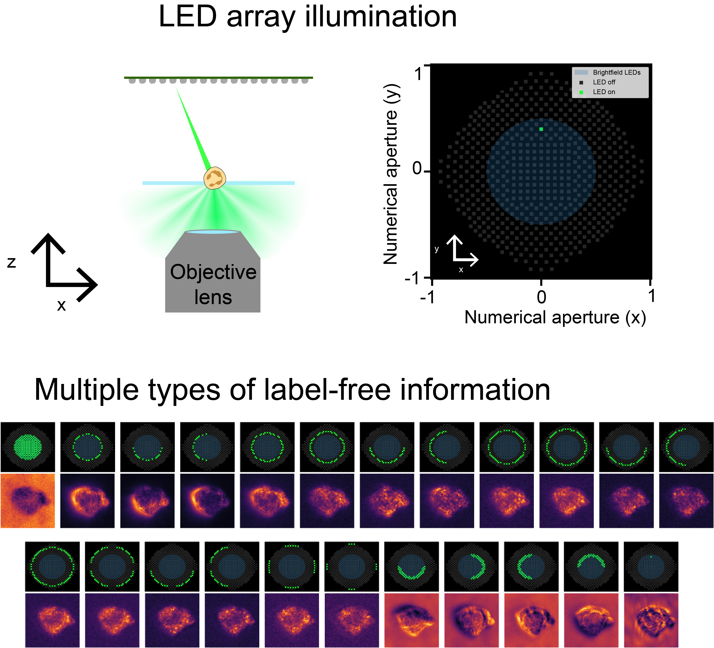
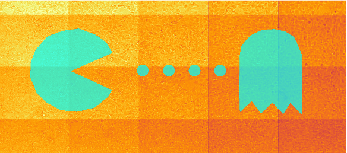

PhD Computational Biology, MS Electrical Engineering and Computer Sciences at UC Berkeley and core developer/steering council member of the Micro-Manager project
Ted Van Duzer Endowed Associate Professor of Electrical Engineering and Computer Sciences at UC Berkeley and Faculty Council Member of the Berkeley Institute of Data Science
info [at] photomics [dot] ai
Open source: Micro-Manager
Micro-Manager is an open source software for control and automation of microscope hardware that
is compatible with hundreds of different hardware componenents, and is used on thousands of microscopes all over the world.
Funders: Support the development of free and open source digital infrastructure for
accelerating scientific progress.
Companies: Make tax-deductible contributions to support the development of Micro-Manager
and its features you most rely on through our
partnership with NumFOCUS..
Label-free microscopy
Using the latest advances in computational microscopy, we can provide
full microscopes or modify existing ones to equip them with label-free imaging capabilities. Contact
us to learn more.
Example: LED array microscopy

Assay automation
Automated assays serve as powerful tools to accelerate the pace of scientific discovery.
Leveraging open-source software libraries, proprietary components built on top of them,
and our extensive knowledge in optics, algorithmic development, and biotechnology,
we can rapidly develop robust user interfaces and APIs.
Reach out to learn more about how our workflows can meet your needs, or to discuss a custom solution.
Example: PhotomicsPrint
The world's smallest billboard
Conjugating a digital micro-mirror device (like those used in projectors)
to the image plane of a microscope enables light to be patterend over a sample. This can be used
to catalyze light-dependent chemical reactions. Several spatial transciptomics utilize this type of technology.
utilize this type of technology.
PhotomicsPrint is a software package that enables the design and application of patterns
over large areas by spatially tiling them across multiple positions of an XY Stage. It includes calibaration
algorithms, a graphical user interface, and an API for integrating with other software packages and/or
automated control using computer vision.

Draw regions to photoconvert on the user interfacePhotoconversion of cells expressing mEos, a photoconvertible fluorescent protein